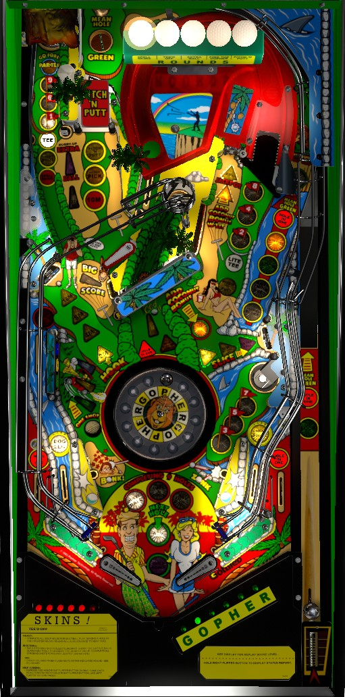

This guide describes the factory settings for Tee'd Off. If this game is included in competition play, it is commonly seen with rule changes that put the game in Reduced Scoring or Tournament modes, which do change some point values and rules. These differences are mentioned at the end of the guide.
Most of Tee'd Off's points are in its multiballs, which are started by completing 9 Holes in order: holes 1, 6, and 9 are the Volcano popper in the top left, holes 2, 4, and 8 are at the right ramp, and holes 3, 5, and 7 are at the lower right saucer. In odd numbered multiballs, flashing shots score a Jackpot and making them all scores a Super Jackpot worth 300,000,000: in even numbered multiballs, every shot in the game adds points to the Lightning Storm bonus given at the end of the ball. Modes are started by shooting the Volcano popper when lit for Tee; if not lit, light it by shooting the right ramp.
The below picture of Tee'd Off's playfield was taken from the VPX recreation by rothbauerw.

The skill shot is a precise power plunge that goes around the back of the game and lands in the Mean Hole Green saucer in the upper left. Doing so awards a Hole in One and a Mystery award, which are both explained later. Whether the skill shot is successful or not, a plunged ball will be redirected to the upper flipper, where you can quickly collect Hole #1, 6, or 9 if they are lit at the top left Volcano popper.
At the start of standard Multiball, plunging the ball into Mean Hole Green will lock it, upgrading the multiball from a 2-ball to a 3-ball round.
Holes 1, 6, and 9 are earned at the top left Volcano popper. Holes, 2, 4, and 8 are earned at the right ramp. Holes 3, 5, and 7 are earned at the lower right saucer. To collect a hole, shoot its corresponding shot, earn a Hole in One anywhere in the game, or enter a mode. You must collect the holes in numerical order, 1 through 9. Collecting hole 9 instantly starts a multiball round. Holes cannot be earned while a mode or multiball is running.
All odd numbered multiballs start the standard multiball. This is a 2-ball multiball, unless you plunge the 2nd ball directly into the Mean Hole Green saucer, in which case you will be allowed to plunge a 3rd ball. The Jackpot starts at 5,000,000 points. To advance the Jackpot, shoot the captive ball located just to the left of the right ramp; there's a pop bumper and some standup targets behind the captive ball, and anything the captive ball hits adds 3,000,000 to the Jackpot. 6 shots are flashing to score a Jackpot: the Volcano popper, the Mean Hole Green saucer, the right ramp, the right orbit, the center of the Hook standup target on the left, and the lower right saucer. Making a flashing shot unlights it. Making the 6th and final flashing shot scores a Super Jackpot, which is always worth 300,000,000 points, and relights all regular Jackpots. This continues until single ball play resumes.
The 2nd, 6th, 10th, etc., multiballs are Raining Cats 'n Dogs (sometimes called Lightning Storm Multiball). Lightning Storm Multiball is always a 3-ball round. The Lightning Storm bonus begins at 25,000,000 points. Making any major shot in the game- which includes the center of the left Hook target, Volcano popper, Mean Hole Green saucer, the center popper behind the drop targets, right ramp, right orbit, the center of the right Slice target, or the lower right saucer- adds 25,000,000 to the Lightning Storm bonus. Advance this bonus as much as you can until single ball play resumes. The Lightning Storm bonus is not added to your score until the current ball in play ends, so absolutely do not tilt on a ball where Lightning Storm Multiball is played. If the Lightning Storm bonus exceeds 1,000,000,000 points, it will not display correctly during the end of ball bonus count, but the correct value is still added to your score. The maximum value of the Lightning Storm bonus is believed to be 6,375,000,000 points (255 advances at 25,000,000 points each). If Lightning Storm Multiball is played multiple times in the same ball, the bonuses are added together.
Lightning Storm Multiball can also be played as one of the selectable awards from Quick Pick, which is qualified at Mean Hole Green after 8 Holes in One are scored.
The 4th, 8th, 12th, etc., multiballs are Anything Goes Multiball. Unlike standard multiball and Lightning Storm Multiball, which are started as soon as Hole 9 is collected from the Volcano popper, Anything Goes Multiball must be started by shooting a right orbit shot that ends up with the ball landing in the Mean Hole Green saucer. Anything Goes Multiball has the same rules as Lightning Storm Multiball, but with every major shot in the game adding 50,000,000 to the Lightning Storm bonus instead of 25,000,000. I have not confirmed whether Anything Goes is subject to the same bonus limit of 6,375,000,000 as Lightning Storm. Once again, the bonus built up during this multiball is not awarded until the next end of ball bonus, so do not tilt any ball where Anything Goes Multiball is played.
If any combination of Lightning Storm and/or Anything Goes are played multiple times on the same ball, the total value of the Lightning Storm bonus is totalled across all multiballs.
There is absolutely 0 ball save at the beginning of any multiball, no matter which multiball it is or how it was started, and there is also not a quick restart for any multiball.
The 5 main modes, called Rounds by the game, are indicated by the golf ball lights along the back of the game. To start a mode, shoot the Volcano popper if it is lit for Tee and there is no other mode or multiball running. If the Volcano is not lit for Tee, shoot the right ramp to light it. Lit golf balls correspond to played modes, while the flashing golf ball is the selected mode, which will be the next one to start; to change which mode is selected, shoot the captive ball. The 5 main modes are:
After all 5 modes have been played, no more modes will be able to be started for the rest of the current ball. Instead, the Big Score target- which is located behind the leftmost drop target and cannot be shot directly- will be lit for the rest of the current ball. The first hit to the lit Big Score target on a ball awards 10,000,000 points. Subsequent hits score 20,000,000, then a repeatable 40,000,000 points. When a ball ends with Big Score lit, it will unlight and the 5 main modes can be replayed.
A Hole in One is awarded for making a skill shot, going down an out lane, shooting the center popper when all 4 drop targets are still standing, as a Mystery award, or for shooting Mean Hole Green during Pitch 'n Putt mode. Making 6 Holes in One in a game lights an extra ball at the Slice target on the right. Making 8 Holes in One in a game awards Quick Pick, which lets you choose between playing an instant Lightning Storm Multiball or lighting the middle left side lane for a Special. The player with the most Holes in One has their initials stored in the machine, and beating the current record scores 1 replay.
When no mode or multiball is running, shooting the center popper while at least one drop target is down spins the Gopher Wheel, a roulette wheel set under the playfield. There are 12 spaces on the wheel: two for each of the six letters in Gopher. When the wheel is spun, a letter will be added to Gopher corresponding to where the roulette ball lands. The ball can land on a wedge corresponding to an already-collected letter, which effectively wastes the spin. If the roulette ball does not settle in any wedge after a few seconds, or if the machine is set to Tournament mode, the game will automatically award one Gopher letter that was not already lit. Completing the word Gopher starts Go-Fore Par-Tee, a 3-ball multiball where any shot to the Volcano popper or center popper scores 20,000,000 points. Gopher letters can also be given for free at the end of a game. This feature should be completely ignored.
At the end of each player's game, a letter in Gopher is chosen randomly, and the wheel is spun. If the wheel lands on the randomly chosen letter, the player whose game just ended scores 5,000,000 points. This feature can be entirely disabled.
The Hook value starts each ball at 2,000,000 points. To collect the Hook value, shoot the center of the Hook standup target on the middle-left when no mode or multiball is running. Advancing past an odd numbered hole adds 2,000,000 to the Hook target value, but only if no multiball has been played on the current ball. 2,000,000 can also be added to the Hook value as a possible Mystery award. The maximum possible Hook value is 30,000,000 points, but it rarely exceeds 12,000,000 due to the relative rarity of Mystery awards.
Each shot to the Slice target in the middle right awards a letter in Slice. Spelling Slice in its entirety starts Hurry-up 50 Million, where shooting the center of the Slice target within 10 seconds scores 50,000,000 points.
Shooting the right orbit immediately after going through the left in lane awards a Dogleg. Every 3 Doglegs scored awards 10,000,000 points.
Shooting the Volcano immediately after going through the right in lane awards a Cheat Shot. The value of a Cheat Shot is not shown directly on the display; it scores 1,000,000 the first time on each ball, 2,000,000 the second time, 5,000,000 the third time, and 10,000,000 thereafter for the rest of the ball.
Shooting the Volcano when it is not lit to start a Tee mode qualifies One Shot, which lights one of the lower left yellow, green, or blue standup targets. Shoot the lit target without hitting any other switch along the way to score a Combo Bonus worth 20,000,000 points.
Shooting Mean Hole Green when no mode or multiball is running (and when Anything Goes is not lit) gives a Mystery award. Possible Mystery awards include:
This list may not be exhaustive. In Tournament mode, the Mystery will always add 5,000,000 to the bonus.
Tee'd Off has a conventional in/out lane setup. Out lanes are always lit for a Hole in One. In lanes are slanted very slightly outward rather than being perfectly vertical, and light Dogleg (left in lane) or Cheat Shot (right in lane). There is no kickback, free ball gate, or center post.
The Coconuts bonus starts each ball at 1,000,000 points. Knocking down any center drop target during single-ball, non-mode play adds 1,000,000 to the bonus. Hitting the captive ball causes it to add 1,000,000 to the bonus for each target or pop bumper hit when no mode or multiball is running, or 5,000,000 per hit during Pitch 'n Putt mode. Mystery awards can also add 5,000,000 or 10,000,000 to the bonus. Coconut bonus can be collected mid-ball by shooting the Mean Hole Green saucer or the lane behind the upper flipper (via the right orbit or right ramp) during Pitch 'n Putt mode. The maximum Coconut Bonus is 255,000,000 points, which cannot be multiplied. The bonus is reset each ball, but is not reset when collected mid-ball during Pitch 'n Putt. Coconuts bonus cannot be multiplied.
All scoring earned from Lightning Storm or Anything Goes multiballs is given out in the bonus as well. Do not tilt a ball where either of these features are played, as they can regularly be more than 1,000,000,000 points.
In competition/novelty play, extra balls score 20,000,000 points and specials score 50,000,000 points.
The exact length of the modes can vary. 20 seconds is the default. The game settings for this are merely named "very easy", "easy", "medium", "hard", and "very hard".
The maximum value of Big Score can be set to 20,000,000, 40,000,000, or 80,000,000.
The maximum value of Cheat Shot can be 5,000,000, 10,000,000, or 20,000,000.
Hurry-up features can last 7 seconds or 15 instead of 10.
Gopher and Skins! will award a letter for free at the end of the game, unless at least X letters are already lit. X can be set to 0, 3, or 5 independently for each feature.
The extra ball awarded for Hole in Ones can occur at 4, 5, 6, 7, or 8 Hole in Ones. Quick Pick always requires 2 more Hole in Ones than the extra ball.
Like many 90s Gottlieb games, Tee'd Off includes a reduced scoring mode design to change the balance of some valuable features. The game manual lists the following changes in reduced scoring mode:
| If you need... | Try... |
| 10,000,000 points | ...starting any mode or earning a Mystery award. |
| 25,000,000 points | ...starting Tee'd Off, Find the Gopher, or Pitch 'n Putt round, or try to start a multiball. |
| 100,000,000 points | ...starting any multiball. If regular multiball is up next, you may need to raise the Jackpot a couple times with captive ball shots or earn a Super Jackpot to score in the 9 figures. |
| 500,000,000 points | ...playing Pitch 'n Putt round and looping the Mean Hole Green saucer if it is available to you and bonus is high, earning a Super Jackpot during regular multiball, or playing any Lightning Storm or Anything Goes multiball. |
| 1,000,000,000 points | ...focusing heavily on Lightning Storm or Anything Goes. Don't forget to use the "free" Lightning Storm available from Quick Pick at 8 Holes in One if you need to. |
| 2,000,000,000 points or more | If you already have multiple billion points and need multiple billion more, consider going for the Double or Nothing from spelling Skins! as a hail mary strategy. Even if the Spell Skins! mode isn't available to you, you can still earn Skins! letters from the Mystery award. If the risk of losing your score is too great or if you don't have very much score to double yet, go back to Lightning Storm and Anything Goes all day. |
Many of the rules in this guide were confirmed by Noah Crable.